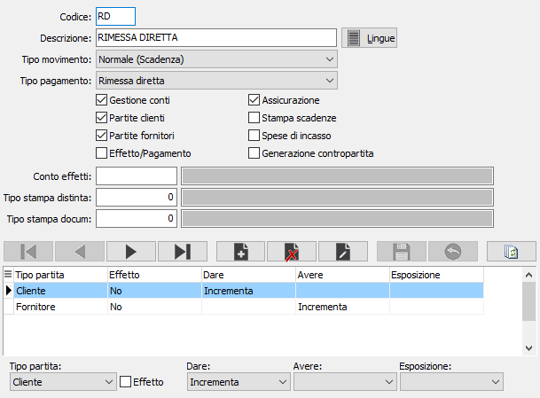

La tabella consente di manutenere le tipologie dei movimenti delle scadenze, i cui parametri governano la gestione delle partite aperte contabili, clienti e fornitori.

CODICE: codice alfanumerico di 2 caratteri che contraddistingue il tipo di movimento. Sul campo sono attive le funzioni di ricerca sulla tabella stessa
DESCRIZIONE: campo descrittivo di 50 caratteri per indicare il tipo di movimento. Il pulsante Lingue consente la gestione della descrizione nelle lingue presenti.
TIPO MOVIMENTO: definisce il tipo di trattamento da utilizzare per il codice. Valori ammessi: normale (si tratta di una scadenza), Nota di credito, Anticipo, Accredito, Insoluto.
TIPO PAGAMENTO: definisce, per i tipi movimento scadenza, la tipologia di pagamento che sarà utilizzata: rimessa diretta, ricevuta bancaria, R.I.D., tratta, cessione, bonifico, assegna bancario, contanti, contrassegno, MAV.
GESTIONE CONTI: check box; se contiene la spunta indica che il tipo movimento può essere utilizzato per la gestione partite patrimoniali
PARTITE CLIENTI: check box; se contiene la spunta indica che il tipo movimento può essere utilizzato per la gestione partite clienti.
PARTITE FORNITORI: check box; se contiene la spunta indica che il tipo movimento può essere utilizzato per la gestione partite fornitori.
EFFETTO/PAGAMENTO: check box; se contiene la spunta indica che il tipo movimento può anche generare effetto attivo oppure pagamento fornitore.
ASSICURAZIONE: check box; se contiene la spunta indica che il tipo movimento deve essere trattato in fase di calcolo del premio da pagare alla società di assicurazione crediti. Utilizzato comunque per proporre tale valore su tutte le modalità di pagamento che contengono il tipo movimento corrente.
STAMPA SCADENZE: check box; se contiene la spunta indica che in fase di stampa documento deve essere stampato il castelletto delle scadenze di pagamento. Utilizzato comunque per proporre tale valore su tutte le modalità di pagamento che contengono il tipo movimento corrente.
SPESE DI INCASSO: Attualmente non gestito.
GENERAZIONE CONTROPARTITA: Attualmente non gestito.
CONTO EFFETTI: utilizzato per la gestione effetti attivi, identifica il sottoconto da utilizzare nelle registrazioni contabili di giroconto dal conto del cliente al conto del portafoglio. Sul campo sono attive le funzioni di ricerca sulla tabella sottoconti.
TIPO STAMPA DISTINTA: utilizzato per la gestione pagamenti fornitori, definisce il testo da utilizzare nella stampa della distinta pagamenti da inviare alla banca. Sul campo sono attive le funzioni di ricerca sulla tabella Tipi stampe.
TIPO STAMPA DOCUMENTO: utilizzato per la gestione pagamenti fornitori, definisce il testo da utilizzare nella stampa dei documenti di pagamento a fornitore (ad esempio avvisi di bonifico). Sul campo sono attive le funzioni di ricerca sulla tabella Tipi stampe.
TIPO PARTITA: combo box; definisce il tipo di partita da trattare. Valori ammessi: cliente, fornitori, sottoconto.
EFFETTO: check box; se contiene la spunta definisce se i valori successivi sono riferiti ad una scadenza oppure ad un effetto
DARE: combo box; definisce la modalità con cui il movimento deve aggiornare la colonna Dare del movimento. Valori ammessi: incrementa, decrementa, nulla.
AVERE: combo box; definisce la modalità con cui il movimento deve aggiornare la colonna Avere del movimento. Valori ammessi: incrementa, decrementa, nulla.
ESPOSIZIONE: combo box; definisce la modalità con cui il movimento deve aggiornare la colonna Esposizione del movimento. Valori ammessi: incrementa, decrementa, nulla.